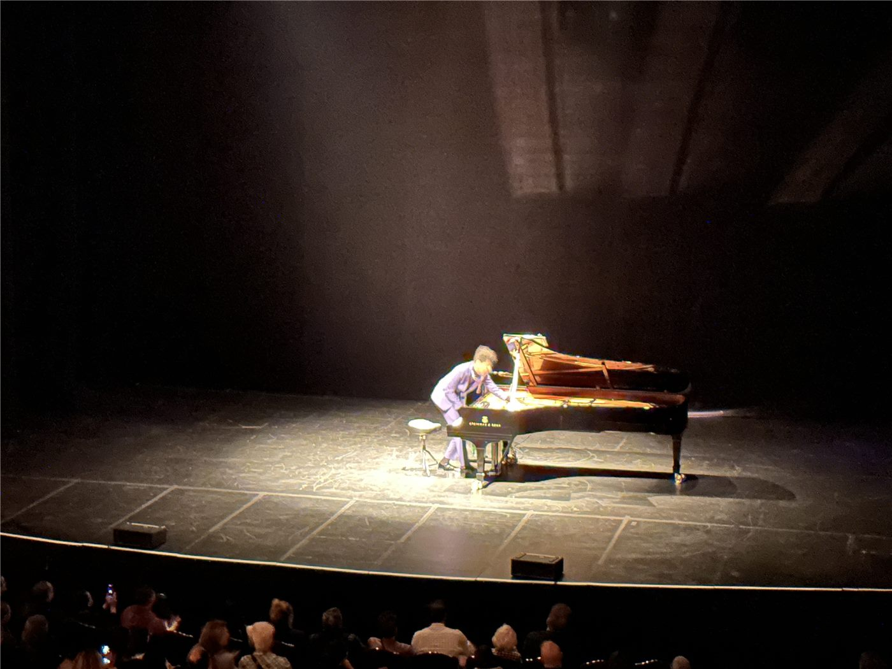

7년에 걸쳐 녹음한 15시간 오페라
7년 동안 녹음 작업을 이어 완성한 15시간 분량의 오페라 전곡 음반이 소개됐다. 대하 드라마에 비유되는 대형 기획이다.
장입군 기자 · 2026.09.19
橋경제·문화·스포츠

7년에 걸쳐 녹음을 이어 완성한 15시간 분량의 오페라 전곡 음반이 소개됐다. 여러 편으로 이어지는 대형 작품을 하나의 기획으로 묶은 사례다.
광고 문의 · 300×250장편 오페라의 전곡 녹음은 일정 조율 자체가 난제로 꼽힌다. 주역 성악가와 오케스트라, 합창단의 일정을 여러 해에 걸쳐 맞춰야 하기 때문이다.
음향 조건의 일관성도 과제다. 녹음 기간이 길어질수록 홀의 상태와 장비 구성이 달라져, 편집 단계에서 균질성을 확보하는 작업이 늘어난다.
성악가의 목소리는 해마다 변한다. 수년에 걸친 녹음에서는 이런 변화가 작품 안에서 어떻게 읽히는지가 평가의 한 축이 된다.
이런 대형 기획은 음반사와 공연장, 방송사의 공동 투자로 진행되는 경우가 많다. 회수 기간이 길어 단독 투자로는 성사되기 어렵다.
청취 환경의 변화도 기획에 영향을 준다. 스트리밍 중심 소비에서 15시간 분량의 작품을 어떻게 제시할지가 별도의 과제로 다뤄진다.
한국에서도 대형 오페라 전곡 공연과 녹음 기획이 이어져 왔다. 제작 규모가 큰 만큼 공공 지원과 민간 후원의 결합 방식이 관건으로 거론된다. (자료: 조선일보 등)